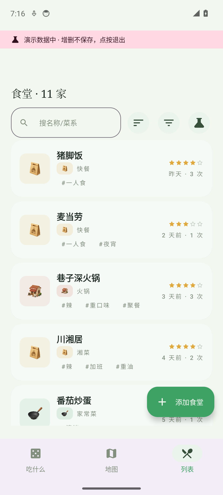
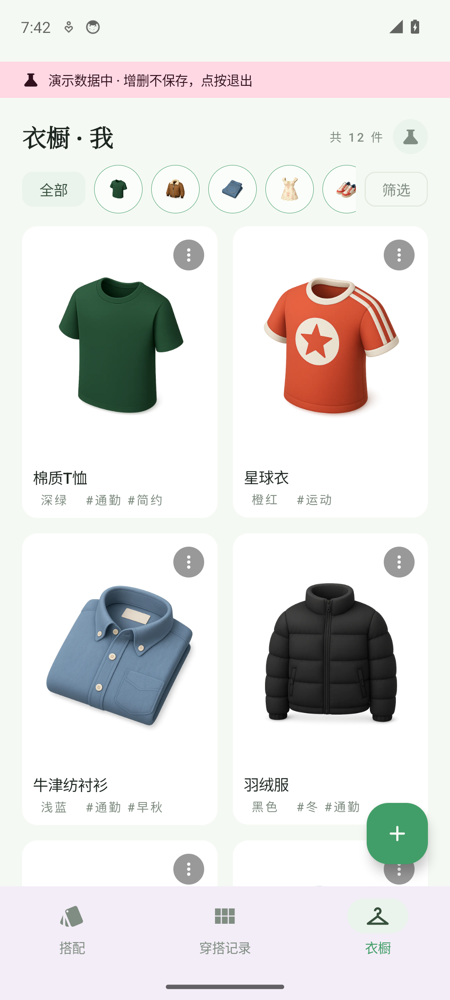
两应用本次落地 libs/store 本地存储 SDK 与应用内演示模式（内存 Mock 数据源）。在演示模式下对 18 个页面实机截图走查、两轮视觉模型评审与 6 组交互实测：演示开关往返、写入不落盘、真实数据零污染全部验证通过；走查发现的种子元数据与配图矛盾（15 处）已当场修复并复验。本报告汇总剩余问题为分级清单，并逐页给出灰盒改版线框：蓝色数字徽标对应右侧改版要点。
emulator-5554 · 演示模式全页面 18 张过程态截图
两轮独立评审 + 局部放大取证 + MD5 查重
演示开关往返 / 增删不落盘 / 真实数据零污染断言链
store SDK 迁移后单测全绿、老数据无缝读起
| # | 问题 | 涉及页面 | 级别 | 修法（对应线框） |
|---|---|---|---|---|
| C1 | 种子元数据与配图矛盾（白T恤/藏青球衣/白色小白鞋等） | W1 · W2 · W4 | P1 | 已修：15 处字段对齐实际素材并重验（导出预览标签已一致） |
| C2 | 选中态与可点性普遍偏弱（筛选 chip/分页箭头/图例箭头/「改」） | E1 · E3 · E4 | P2 | 选中容器加深+前置勾；热区≥48dp（E1 线框③） |
| C3 | 底部按钮栏硬裁滚动内容、无渐隐 | E4 · W2 · W4 | P1 | 滚动区 bottom padding + CTA 上缘渐隐（E4 线框④） |
| C4 | 底部导航容器偏淡紫，与米绿主题色温打架 | 两应用全部页 | P2 | 导航底色对齐主色 tonal palette |
| C5 | 图标体系混用（emoji 剪贴板 vs 矢量） | W1 · W4 | P2 | 统一矢量图标（导出弹层已是矢量，直接对齐） |
| C6 | 演示横幅与入口打磨 | 两应用 | P2 | 横幅圆角化+单色；eats 列表入口降 tonal；wardrobe 入口语义化（E1④/W1④） |
| C7 | 文案与格式不统一（记一笔/落账；日期两种格式） | E4 · W3 | P2 | 术语表收敛；统一「同年省年」规则 |
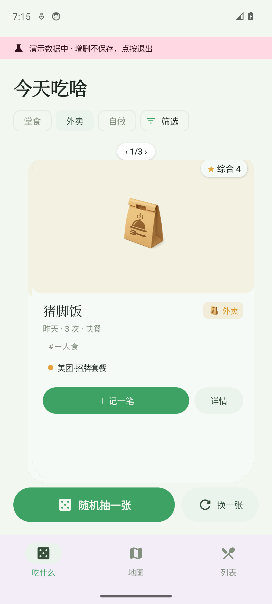
骨架健康、信息齐全，但卡片下部约 220px 死区让重心失衡；选中态与分页热区普遍偏弱。
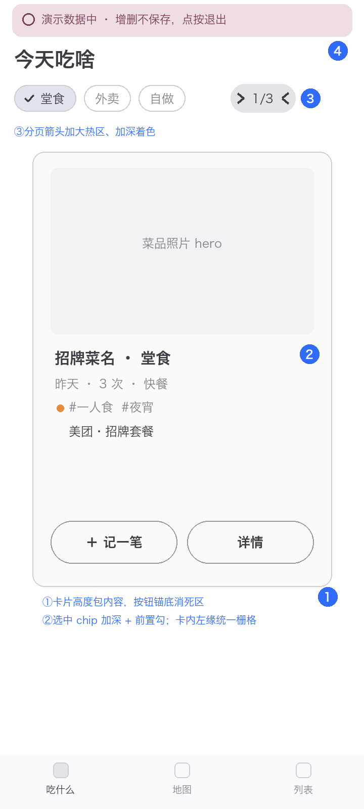
结果卡本体（深绿底+亮绿描边）层级出色；但落定后底部按钮以 15% 透明度残存，「换一张」与「再抽」语义重复易误触。
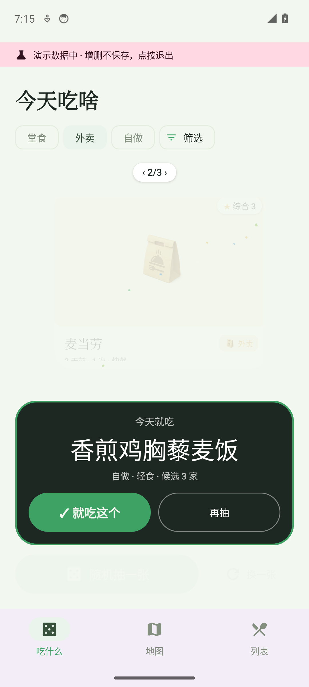
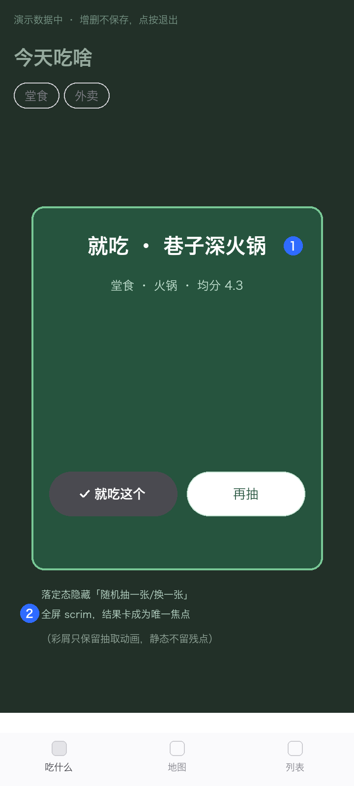
图例与 marker 用色自洽；但自有红圈 marker 与高德底图地铁红色图标同形同色，扫视时互相混淆。
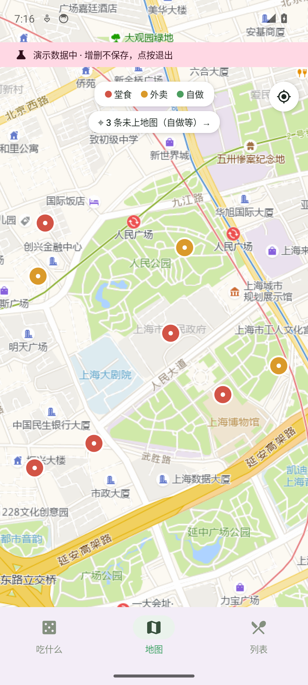
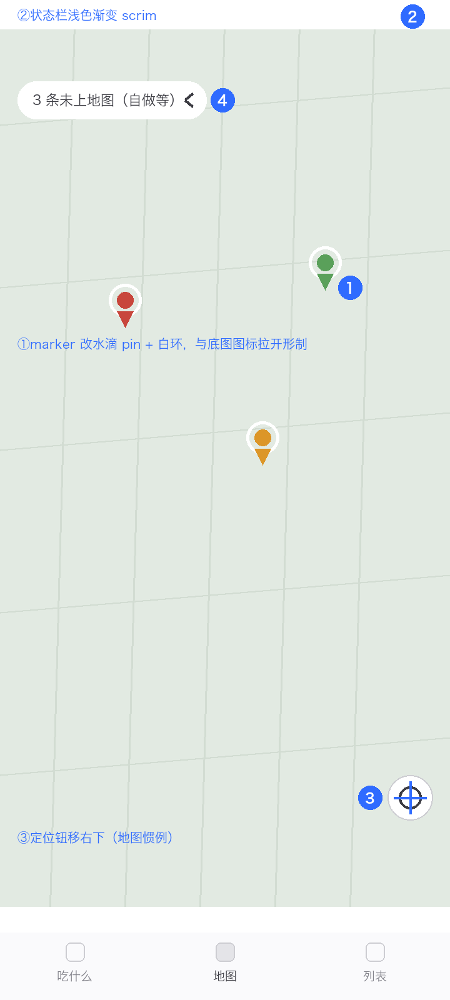
表单栅格工整是亮点；但位置信息双重展示无标签、记一笔两个输入框零间距相接、详情/表单顶部 170px 空带三处最伤。
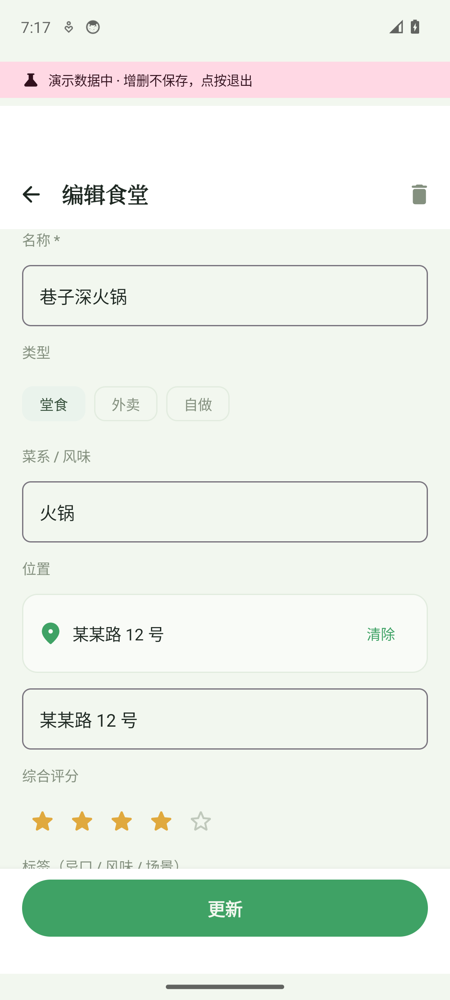
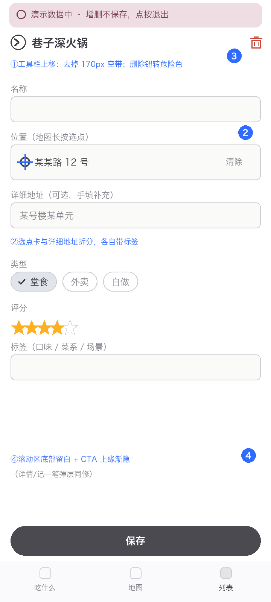
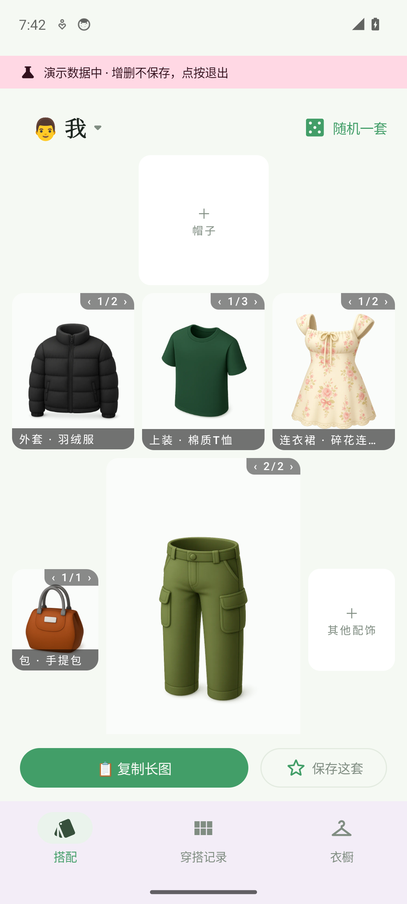
衬线大标题与品类圆标 Tab 的编辑感成立；种子 15 处「名称/颜色与配图矛盾」已当场修复复验，导出预览标签已与图一致。
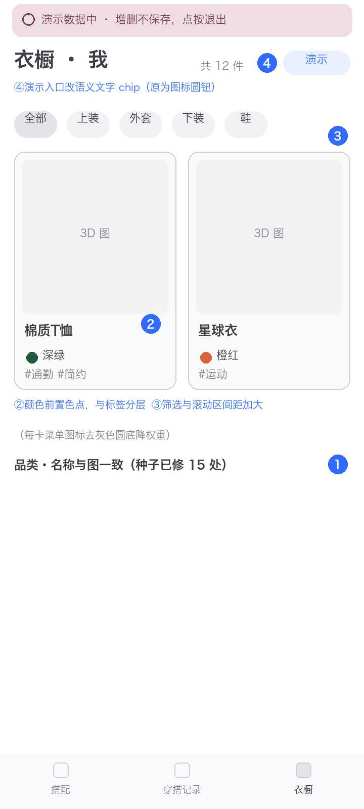
照片大图占 60% 屏高挤压表单，唯一可见字段被「更新」按钮栏裁掉上半，呈现为破相截断。
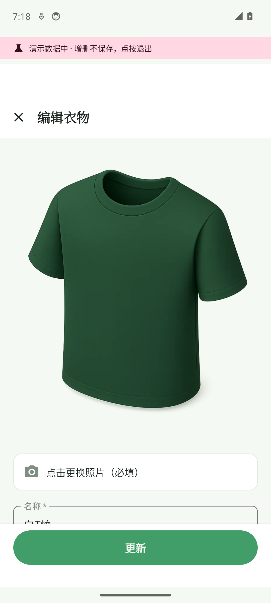
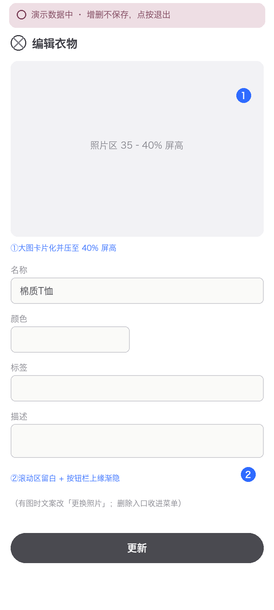
「这套包含」是全 App 最标准的列表；但记录卡翻页胶囊直接压住「未配帽」槽位文字，详情页「录入成品图」按钮骑压虚线槽，两处叠压均经放大取证。
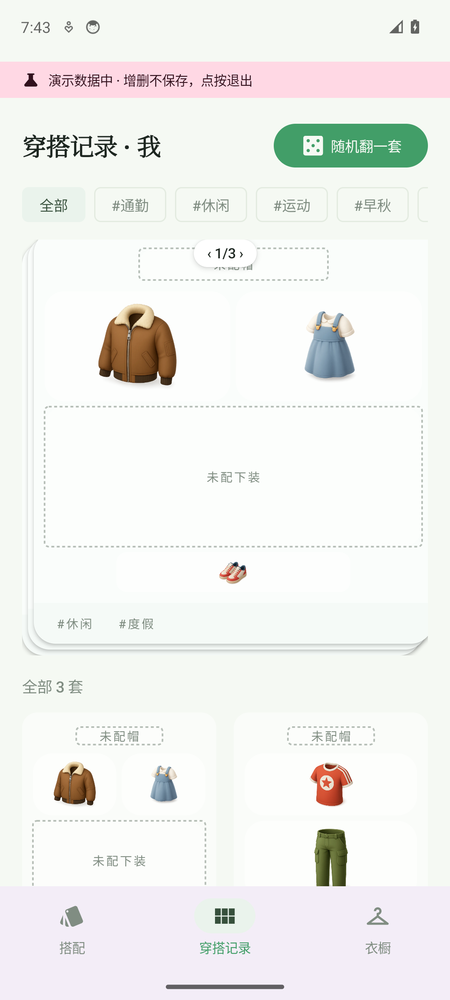
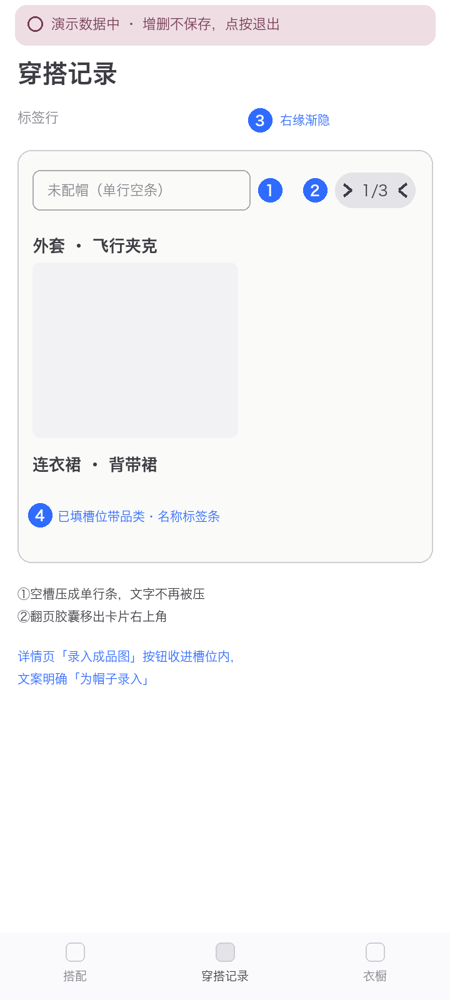
底部动作分层清楚；但预览仅约 21% 屏宽悬在空旷底色上，确认前无法核对产物内容——种子修复后标签已与图一致。
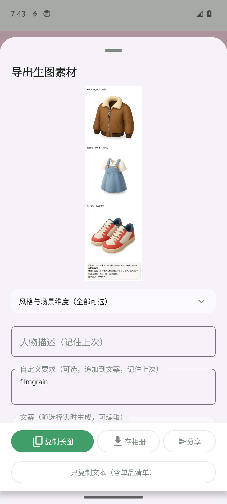
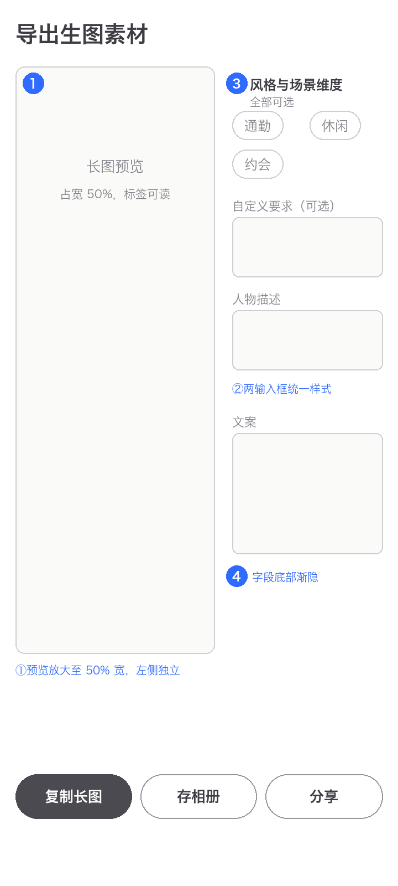
按仓库迭代流程确认后动工；先修共性问题（功能在但用户够不着/猜不到），再修各 App 核心体验。
| 线框 | 内容 | 对应 |
|---|---|---|
| O1 | 卡组页：卡片高度包内容、选中态体系、分页热区 | E1 |
| O2 | 落定态：隐藏底部按钮条 + 全屏 scrim | E2 |
| O3 | 地图：水滴 marker + 状态栏 scrim + 定位钮右下 | E3 |
| O4 | 表单：位置字段拆分、顶部空带收紧、CTA 渐隐、弹层零间距 | E4 |
| 线框 | 内容 | 对应 |
|---|---|---|
| O1 | 衣橱卡：色点分层、⋮ 降权重、演示入口语义化 | W1 |
| O2 | 编辑表单：照片区压 40%、按钮栏渐隐、删除路径 | W2 |
| O3 | 记录/详情：空槽单行化、胶囊移出卡外、成品图按钮收进槽位 | W3 |
| O4 | 导出：预览 50% 左置、输入框统一、字段渐隐 | W4 |
| 线框 | 内容 | 对应 |
|---|---|---|
| O1 | 导航底色回归主色 tonal；图标统一矢量 | C4 · C5 |
| O2 | 选中态与可点性规范（加深+勾+48dp） | C2 |
| O3 | 术语表与日期格式收敛 | C7 |
| 线框 | 内容 | 对应 |
|---|---|---|
| O1 | 随机一套命中连衣裙时跳过上装/下装槽（走查实测暴露） | W1 · W2 |
| 项目 | 结论 |
|---|---|
| eats 演示开关往返 | 烧瓶按钮 → 确认框 → 重启进入（横幅+11 家 mock）；点横幅退出回真实 ✅ |
| eats 写入不落盘 | 演示中删麦当劳 → 10 家 → 退出 → 真实 9 家原样 ✅ |
| wardrobe 演示开关往返 | 「演示」钮 → 重启进入（「我」12 件+assets 照片）；退出回「Leo 17 件」零污染 ✅ |
| eats 数据层迁移 | store SDK 三件套替换自研；单测全绿；老数据无缝读起 ✅ |
| mock 种子单测 | eats 4 例 + wardrobe 5 例全绿 ✅ |
| 走查驱动修复 | 评审抓出种子 15 处字段与图矛盾 → 修正 → 导出预览复验一致 ✅ |
现状截图与改版线框见 assets/ 目录；本报告由 report_template.py 生成，可改数据重出。